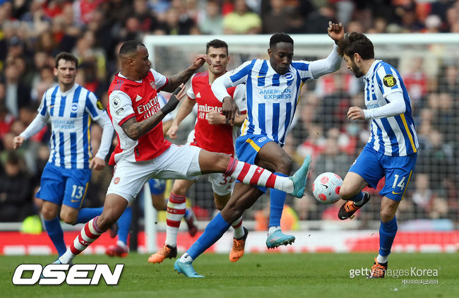

실시간 이슈
- 리버풀 vs 맨시티
- 손흥민 해트트릭
- 아스날 니가가라 챔스
리버풀 vs 맨시티

11일 새벽, 2021-22시즌 프리미어리그 우승 경쟁을 펼치고 있는 맨시티와 리버풀이 맞붙는다.
‘선두’ 맨시티가 주춤한 사이 리버풀이 맹추격하며 승점 차이가 1점으로 좁혀진 두 클럽은
시즌 막바지인 32라운드에서 마지막 리그 맞대결을 펼치게 됐다.직전 경기였던 챔피언스리그
8강 1차전에서 각각 승리한 양 팀은 상승세를 이어 리그 1위 결정전에 나선다.
케빈 더 브라위너와 모하메드 살라의 에이스 대결로도 관심이 모인다.리버풀의 홈구장인 안필드에서
진행된 시즌 첫 만남에서는 서로 2골씩 주고받은 끝에 무승부로 끝났다. 약 6개월 만에 다시 만나게
된 두 팀은 일주일에 두 번의 맞대결을 치를 예정이다.
손흥민 해트트릭

손흥민은 경기 시작 3분만에 골을 터뜨리며 3경기 연속골을 달성했다.
에릭 다이어가 하프 서클에서 길게 올려준 공이 에즈리 콘사의 헤더로 걷어내지는 듯 했지만 곧바로 해리 케인의
발 앞에 떨어졌다. 케인이 이를 슈팅으로 연결했지만 공은 매티 캐시의 몸에 맞았다. 하지만 공은 공교롭게도
손흥민의 왼발 앞에 떨어졌다. 손흥민은 조금도 머뭇거리지 않고 강한 왼발 슛으로 왼쪽 골대를 맞고 들어가는
골로 연결했다.
아스날 니가가라 챔스

아스날은 10일(한국시간) 잉글랜드 런던에 위치한 에미레이츠 스타디움에서 끝난 브라이튼과의 2021-2022
시즌 잉글랜드 프리미어리그(PL) 32라운드 일정에서 1-2 패배했다.
이날 패배로 아스날은 승점 54로 토트넘과 동률이나 골득실에서 밀렸다. 만약 토트넘이 아스톤 빌라전서
이긴다며 3점 차이로 벌어진다. 아스날은 전반 28분 뒷공간을 파고든 음웨푸가 우측면에서 컷백 패스를 허용했다.
때에 맞춰 돌파한 트로 사르의 슈팅을 허용하며 선제골을 내줬다.